Implementing VCS Using GitHub
The Steps Mentioned Below In The Form Of Images And Written Commands Can Be Followed To Get
Yourself Started on GitHub
Creating a New Repository On Command Line
- "# Git-Implementation" >> README.md
- git init
- git add README.md
- git commit -m "first commit"
- git branch -M main
- git remote add origin https://github.com/Harssiii/Git-Implementation.git
- git push -u origin main
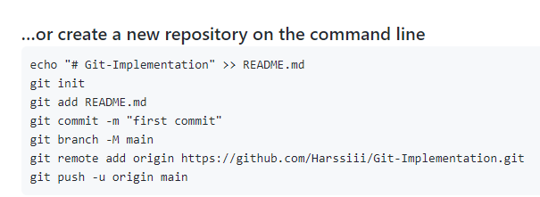
Pushing an Existing Repository From Command Line
- git remote add origin https://github.com/Harssiii/Git-Implementation.git
- git branch -M main
- git push -u origin main
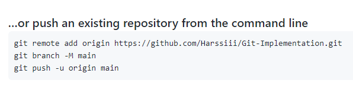
Now After Creating a Folder Locally On Our PC and Initializing Git Here On Using Following Command
- git init
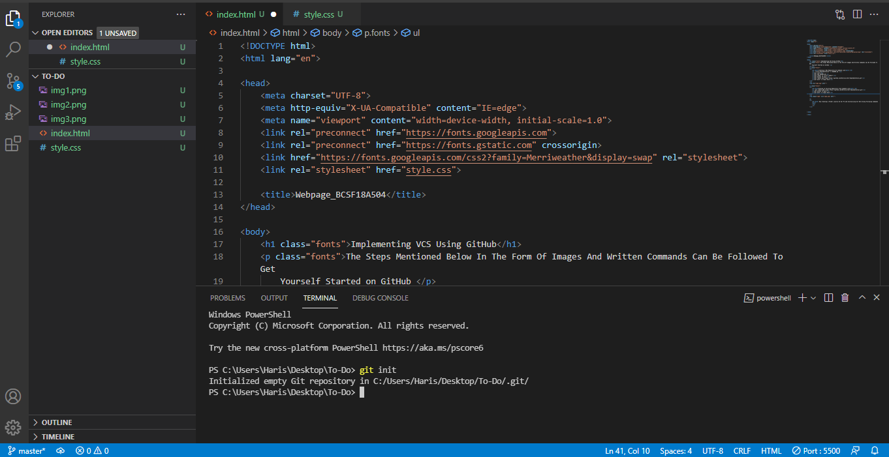
Now Write The Following Command To Add Git
- git add .
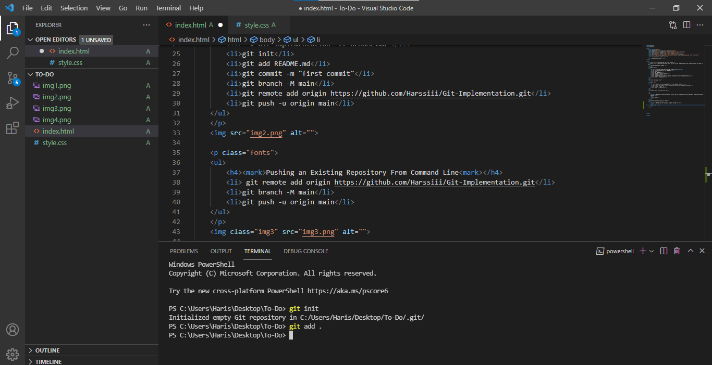
Use The Following Command To Commit And add A Proper Message
- git commit -m "First Commit"
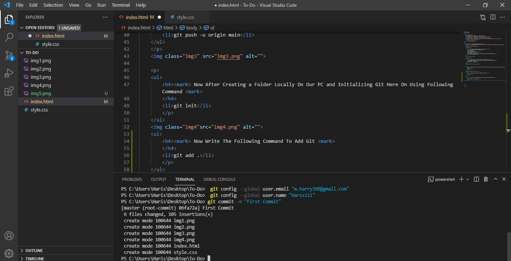
Use The Following Command To Change The Branch From master to Main .You Can Copy It Too From GitHub Mentioned Steps
- git branch -M main
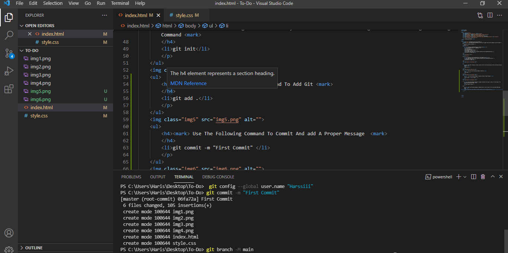
Use The Following Command To Remotely add it.You Can Copy It From GitHub Mentioned Steps Too
- git remote add origin https://github.com/Harssiii/Git-Implementation.git
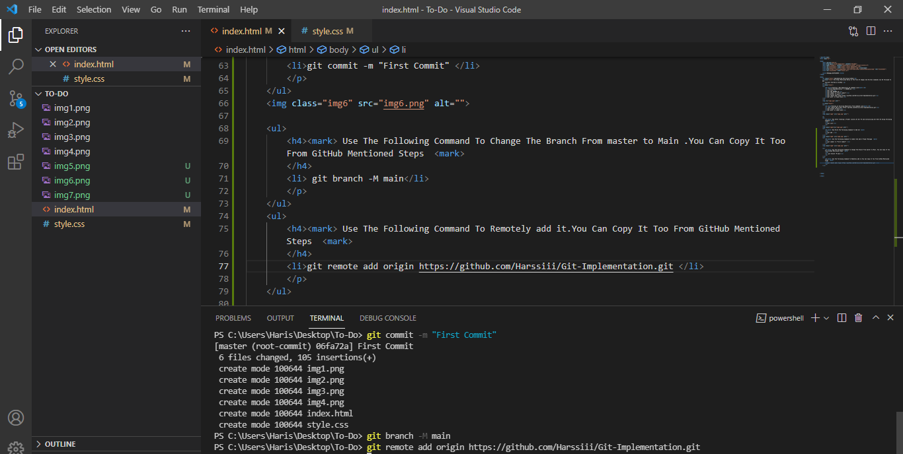
Now After All The Required Connections You Can Actually Push Your Work,Using The Following Command,In Your Repository That Is Available Remotely
- git push -u origin main
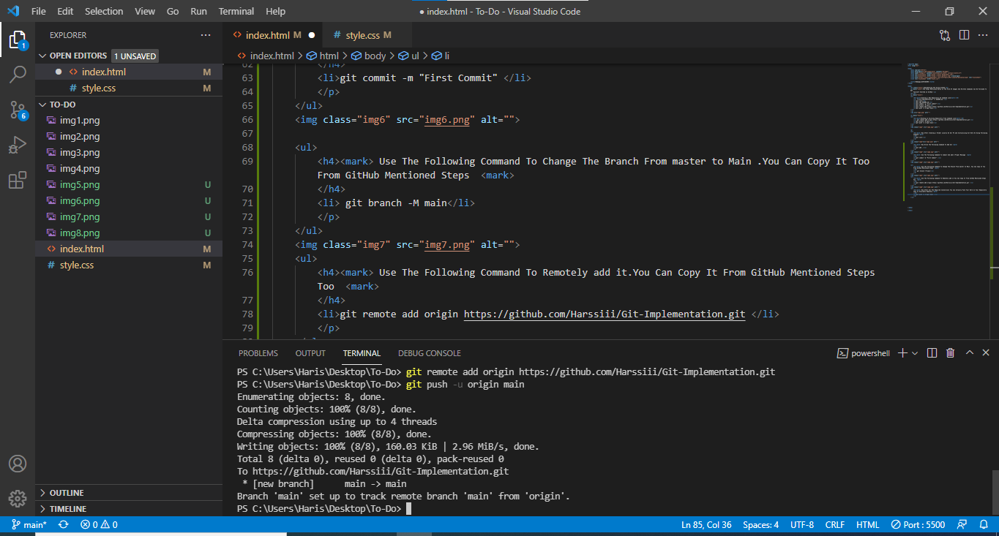
You Can Push Your Code Even After Some Changes Using The Following Command
- git push --set-upstream origin main
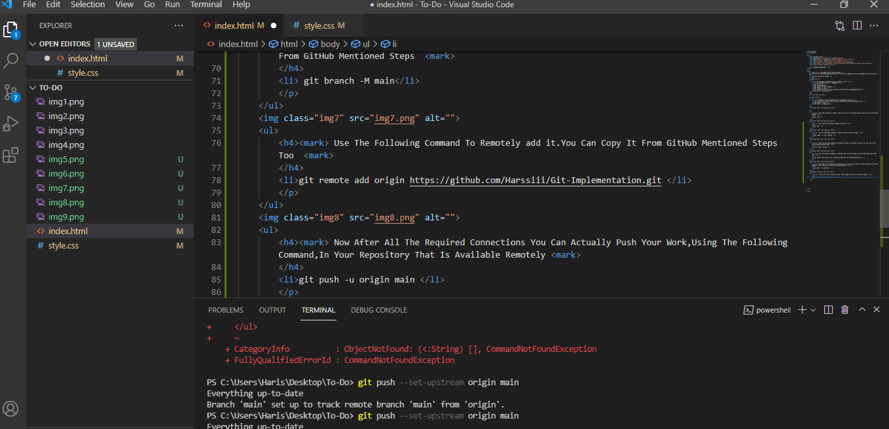
You Can Track Your Commits In your GitHub Commits. It Will Be Viewable Like This
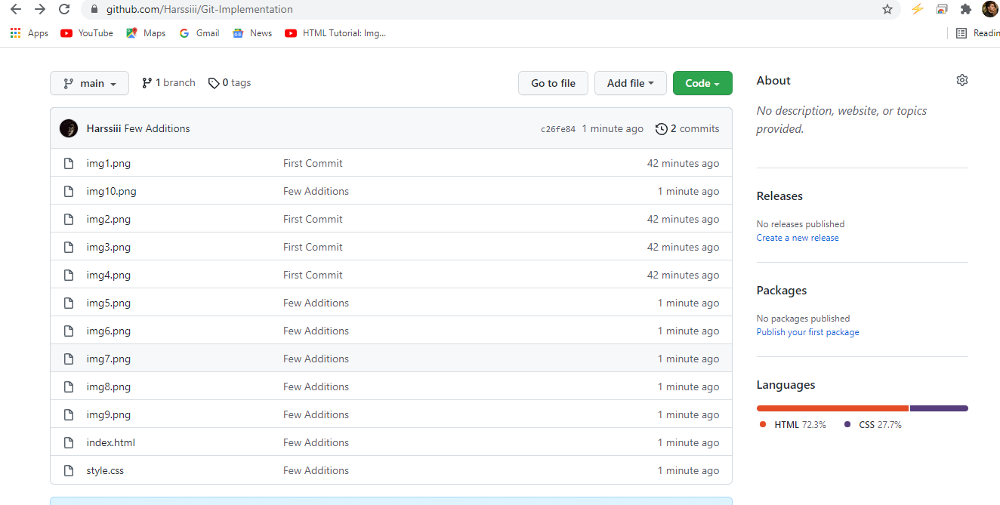
You Can Publish Your Page Over Git By Going Into Settings And Giving The Root Of The Branch And Git will Generate A Link For It Automatically
- In My Case It Is https://harssiii.github.io/Git-Implementation/
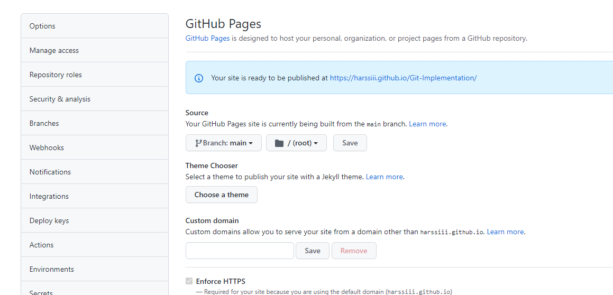
Created By Muhammad Haris(BCSF18A504)